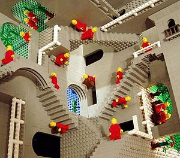

La Ley del Más y Más fuerte
 De: La Frikipedia, la enciclopedia extremadamente seria.La Ley del Más y Más fuerte, tambien conocida como la Ley de fuera de la realidad, es una ley absurda creada por el Cientifico Polaco Chufesner Irealist, que consistia en llevar cualquier objeto, cosa, o persona al limite con estupidas ideas. Esta ley de por si no tiene ninguna logica, pero, cuando estas sin salida ni tienes ideas, su uso se vuelve muy frecuente, aunque igualmente inutil, la situacion seguira siendo la misma pero mas comica y satirica.
De: La Frikipedia, la enciclopedia extremadamente seria.La Ley del Más y Más fuerte, tambien conocida como la Ley de fuera de la realidad, es una ley absurda creada por el Cientifico Polaco Chufesner Irealist, que consistia en llevar cualquier objeto, cosa, o persona al limite con estupidas ideas. Esta ley de por si no tiene ninguna logica, pero, cuando estas sin salida ni tienes ideas, su uso se vuelve muy frecuente, aunque igualmente inutil, la situacion seguira siendo la misma pero mas comica y satirica.

Por mas rayas que le pongas, sigue siendo un
puto cuadrado.
Explicacion y usos
La Ley del Más y Más fuerte se puede usar en cuanto a velocidad, peso, longitud, inteligencia, fuerza, de un ser vivo o cosa.
Ejemplo en cuanto a velocidad se refiere:
- Untar el motor/musculo de cualquier vehiculo/ser vivo con sangre de guepardo, no aumenta en absoluto su velocidad, pero queda guay.
- Si te pones un cohete a la espalda, no iras mas deprisa, te quedaras simplemente sin espalda.
Ejemplo en cuanto a fuerza se refiere:
- Si comes carne de Leon, no te haces mas fuerte, lo mas seguro que te crezca mas barba.

Claro ejemplo de la Ley, no importa lo cientifico que quieras hacer ver el lado oscuro, seguira siendo igual.
- Si matas a una persona muy fuerte, no adoptas su fuerza, lo mas seguro que te metan en la carcel.
Ejemplo en cuanto a Inteligencia se refiere:
- Si te operas para juntar tu cerebro con el de alguna persona inteligente, no seras mas listo, seras un demente que ahora sufre esquizofrenia.
- Si estudias durante toda tu vida y sacas siempre 10 y todos admiran tu inteligencia, no es que seas mas listo, es que siges durmiendo.
Personas que apoyaron la Ley del Más y Más fuerte para que fuese patentada legalmente
 Por muchas escaleras que le pongas, nunca mejoraran su utilidad.
- Coyote: Su vida se basa practicamente en ejercer esta ley con su ayudante el correcaminos.
- Chufesner Irealist: Su descubridor y el que puso la patente, murio 3 dias despues por intentar ser mas rapido si le perseguian 10 hienas salvajes hambrientas, tropezo y se habrio la cabeza.
- Nostradamus: Penso que si el fin del mundo no llegaba en el año 1000, ¿el siguente seria no?
Grupo de Investigacion que ayudo a Chufesner
El grupo fue muy diverso, tenia en si expertos en todas las materias.
- alguien que no está registrado: Experto en frikadas y diversas teorias del caos imaginarias.
- Stephen Hawking: Experto en hidromecanicacuanticaextramolecularcondieresisenlaü, fue una ayuda crucial para el desarollo de tales pruebas con chimpances y osos pandas.
- Grupo obvio de japoneses super dotados: Eran los listos necesarios para rellenar y los que pusiesen un poco de sentido
homosexual comun al proyecto.
¿Cuanto tiempo llevo hacer esta mamarachada sin sentido?
Esta ley fue desarollada durante mas de 20 años para ver su credibilidad, en su desarollo murieron mas de 120 osos panda, 1800 focas monje, 3 mantis religiosas color purpura y innumerables y valiosisimos seres humanos frascos.
Autor(es):
- Frikiman
- Artemio
- Veni Vidi Vici
- Dark temptation
- Harry El del Pote
Frikipedia 2005-2016, Licencia
GFDL 1.2 - Extraído por FrikiLeaks